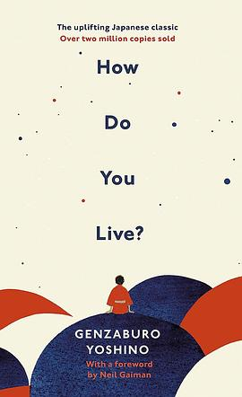
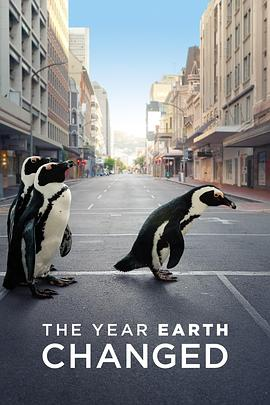
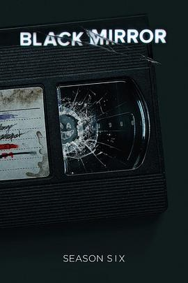

2023-08-29 20:53:57
 在看 约翰·威尔逊的十万个怎么做 第一季 / How to with John Wilson Season 1 ★★★★★
在看 约翰·威尔逊的十万个怎么做 第一季 / How to with John Wilson Season 1 ★★★★★
作者记录生活的视角很奇特，而且能坚持每天都写日志，确实很organize
2023-08-29 12:07:07
 想玩 星之海 Sea of Stars
想玩 星之海 Sea of Stars
2023-08-27 21:39:14
 看过 消失的她 ★★★★☆
看过 消失的她 ★★★★☆
电影叙事还不错，不知道是不是因为翻拍的缘故，看的过程中一直是在被牵着鼻子走的。知道结局才恍然大悟，有强烈的既视感，不确定是不是《1899》还是其他更之前的电影。总之也是看起来观感很不错的反转剧
2023-08-26 15:36:16
 玩过 半条命：爱莉克斯 Half-Life: Alyx ★★★★★
玩过 半条命：爱莉克斯 Half-Life: Alyx ★★★★★
年初的时候在公司用htv vive玩的，画面、交互和操作感真是太真实了。可惜散光度数太高，眼镜太大，fit不进去，所以看得也不是很清晰，没有坚持玩下去。我这眼睛怕是很难快乐体验VR了
2023-08-26 14:17:32
 玩过 植物精灵 Botanicula ★★★★★
玩过 植物精灵 Botanicula ★★★★★
超多收集要素，解密的地图也很大，音乐也非常令人着迷。不得不说很容易迷路，即使有了地图依然容易迷路。应该是小成本解谜游戏的痛点，因为团多没资金做hint系统 =，=
2023-08-26 06:24:53
 想玩 肯塔基零号国道 Kentucky Route Zero
想玩 肯塔基零号国道 Kentucky Route Zero
2023-08-26 06:10:29
想看 约翰·威尔逊的十万个怎么做 第一季 / How to with John Wilson Season 1
2023-08-25 22:03:39
 看过 遇人不熟 / 運命じゃない人 ★★★★☆
看过 遇人不熟 / 運命じゃない人 ★★★★☆
一个正常的I人身边围了4个秘密身份的人，各个打着自己的小算盘，通过3次不同视角叙述同一天的时间线展示出来故事的不同面貌。把开始认为的好人一个个全部推翻，一个接一个的反转。精彩！
2023-08-25 21:50:04
 看过 侏罗纪世界3 / Jurassic World: Dominion ★★★☆☆
看过 侏罗纪世界3 / Jurassic World: Dominion ★★★☆☆
爆米花电影，没杀剧情，全靠镜头语言渲染气氛，没有jump scare好评
2023-08-24 21:43:45
 看过 预产期 / Due Date ★★★★☆
看过 预产期 / Due Date ★★★★☆
看了一堆烂片，这部片可以到70-80%的样子。笑点前后呼应的都不错（比如说汽车撞门），很多意想不到的点（比如说墨西哥边境奇遇），节奏掌握的也不错，张弛有度，尤其是冲咖啡那一段太心酸。不足的点主要是全片都是靠对话来驱动剧情。
2023-08-23 22:25:14
转发：


2023-08-21 23:38:59
 想看 摄影机不要停！ 续集 好莱坞大作战！ / カメラを止めるな！ スピンオフ ハリウッド大作戦！
想看 摄影机不要停！ 续集 好莱坞大作战！ / カメラを止めるな！ スピンオフ ハリウッド大作戦！
2023-08-21 18:51:39
 看过 摄影机不要停！ / カメラを止めるな！ ★★★★☆
看过 摄影机不要停！ / カメラを止めるな！ ★★★★☆
从《盗钥匙的方法》来的，看了片头40分钟感觉被推荐错了，后面开始发力，所有前面提到的点全部都呼应了，一个废点都没有，看完毫无疑问，是一个很完整的故事。看到最后才发现是两个平行的剧中剧，又是解答了全部的疑问，很棒！
2023-08-21 07:28:05
 想看 铁道：家色 / かぞくいろ RAILWAYS わたしたちの出発
想看 铁道：家色 / かぞくいろ RAILWAYS わたしたちの出発
fed by mt new uploads
2023-08-20 19:58:32
想玩 植物精灵 Botanicula
2023-08-20 19:57:07
 玩过 纸艺历险 Papetura ★★★★★
玩过 纸艺历险 Papetura ★★★★★
很短小很惊喜的游戏，差不多可以算是4个塞尔达神庙的规模。但是折纸风格非常用心，可能素材真的是折出来扫描的？
2023-08-20 15:49:06
 看过 超能一家人 ★★★☆☆
看过 超能一家人 ★★★☆☆
很多对老毛子的刻板印象的搞笑点都很不错。全片金句 “家人就是用来‘拖累’的” 十分赞同。
2023-08-19 17:54:41
 在玩 博德之门3 Baldur’s Gate 3 ★★★★★
在玩 博德之门3 Baldur’s Gate 3 ★★★★★
在GOG低价区入了，比steam国区价格略低。非常好玩，把dnd发扬光大了。虽然小时候没有玩过dnd，但是当时是纸上<传奇>，依旧是很怀念的回忆。
2023-08-16 22:52:01
 想看 黑水 / Dark Waters
想看 黑水 / Dark Waters
海瑟薇
2023-08-16 22:50:16
 看过 实习生 / The Intern ★★★★★
看过 实习生 / The Intern ★★★★★
看海报以为海瑟薇是intern，结果大叔是intern，这个反差萌导致故事意外地精彩。一度觉得剧中senior intern program是个很不做的idea，凸凹很多退休的老人会投身教育行业，教大家如何为人处世以及人情世故的“智慧”，当然也有老人想继续工作，但是基本上没有这样的entry level的机会。还有就是220人公司的founder能兼顾家庭真的是很理想化了。有着年轻人常见的对于孤独终老的恐惧，却不想放弃梦想。或许和intern/best friend葬在一起也是很棒的事。
2023-08-16 22:41:12
 看过 变形金刚：超能勇士崛起 / Transformers: Rise of the Beasts ★★★☆☆
看过 变形金刚：超能勇士崛起 / Transformers: Rise of the Beasts ★★★☆☆
隔了有段时间了，这部特效和剧情都有点不够用心啊 =，= 特效割裂感+无语的剧情略多
2023-08-15 19:04:58
 看过 龙与地下城：侠盗荣耀 / Dungeons & Dragons: Honor Among Thieves ★★★★☆
看过 龙与地下城：侠盗荣耀 / Dungeons & Dragons: Honor Among Thieves ★★★★☆
今年才知道DnD就是我小学时候玩的纸上游戏，同事有好几套剧本书，然后带到公司和大家玩。《怪奇物语》第一集开头也出现了。玩起来很慢，因为需要橡皮铅笔反复修改，但是很多人一起玩还是很有乐趣的，可惜长大后感觉再也腾不出时间了。电影很好看，很难得的爆米花电影，彩蛋很多，很多惊喜。
2023-08-14 18:59:29
 看过 熔炉 / 도가니 ★★★★★
看过 熔炉 / 도가니 ★★★★★
气氛和气愤从开头到结尾渲染的都很到位。与故事里的内容类似的真实事件，我通过各种渠道也是听说过很多，因为种种原因，我们《内咸》的方式也各不相同。但正如电影上的价值- “我们一路奋战不是为了改变世界，而是为了不让世界改变我们。” 共勉。
2023-08-13 15:28:59
 玩过 塞尔达传说 王国之泪 ゼルダの伝説 ティアーズ オブ ザ キングダム ★★★★★
玩过 塞尔达传说 王国之泪 ゼルダの伝説 ティアーズ オブ ザ キングダム ★★★★★
要不是前有博德之门3，后有Starfield，不然鼓不起勇气去打大魔王。总体来说每一个大战役做的都很棒，神庙解密设计的也很好，当然由于这次高科技的加成，神庙很容易跳过了就。自由度没得说，太好玩了，从来没有一个游戏玩到130小时以上。虽然上一代还没玩完，但是感觉不见得有那么多时间打了，继续吃灰吧先😂
2023-08-12 15:43:06
想看 熔炉 / 도가니
2023-08-12 15:38:06
 看过 茶馆 ★★★★★
看过 茶馆 ★★★★★
老舍的经典在今天开来依然是一个十分让人感到心痛的故事。很有共鸣，很担心七十多了才悟出人生道理。引用最近超导界常说的话：Are we back? We are so back!
2023-08-12 14:24:44
想看 实习生 / The Intern
2023-08-11 21:32:26
 看过 超能透明人 ★☆☆☆☆
看过 超能透明人 ★☆☆☆☆
本来以为60分钟的喜剧电影可以轻松一些，没想到剧情是因为平铺直叙才凑不够时间的。剧情设定比较扯，剧情也没有出彩，搞笑的部分太少了，完全不是戏剧。所以，祭出我为数不多的一星。
2023-08-09 17:09:20
 想看 孤注一掷
想看 孤注一掷
2023-08-07 00:39:42
 想看 别班 / VIVANT
想看 别班 / VIVANT
2023-08-06 17:02:14
 看过 速度与激情10 / Fast X ★★★★☆
看过 速度与激情10 / Fast X ★★★★☆
新家人加入，旧家人离去，总之就是编剧最后一集可以拍N部。观感还是真香的，就是有几段有点跟不上剧情发展了，摸不着头脑。
2023-08-06 16:53:19
 看过 奇迹·笨小孩 ★★★☆☆
看过 奇迹·笨小孩 ★★★☆☆
乌托邦一般的深圳，奇迹一般的工友，一点也不笨的大人+99.999%的运气，可能是这个时间地点所需要的主旋律。太过梦幻的人生。
2023-08-03 22:01:33
 看过 恶世之子 / To Catch A Killer ★★★☆☆
看过 恶世之子 / To Catch A Killer ★★★☆☆
有点像Criminal Minds的电影版，不过这次的反派有点离谱，有最厉害的射击技巧，但是只是一个激进的环保人士。剧情没有海报上画的精彩感觉。
2023-08-03 18:31:54
 想看 狩猎 / 헌트
想看 狩猎 / 헌트
2023-08-03 18:22:59
想看 茶馆
2023-08-03 18:15:50
想看 恶世之子 / To Catch A Killer
2023-08-03 18:06:12
 想看 生化危机：死亡岛 / バイオハザード：デスアイランド
想看 生化危机：死亡岛 / バイオハザード：デスアイランド
2023-07-30 13:43:22
 看过 无名之辈 ★★★★☆
看过 无名之辈 ★★★★☆
没有太多喜剧成分，甚至感觉越看越不觉得好笑，只是说了一个有一些甜美但是很沉重的故事。
2023-07-28 21:42:48
看过 秘密入侵 / Secret Invasion ★★★☆☆
第一集还挺有趣，后面越来越像西部世界，而且让人犯困+摸不着头脑的对话和剧情发展。
2023-07-23 21:27:18
想看 摄影机不要停！ / カメラを止めるな！
2023-07-23 21:26:47
想看 遇人不熟 / 運命じゃない人
2023-07-23 21:13:28
看过 盗钥匙的方法 / 鍵泥棒のメソッド ★★★★★
宝藏电影啊，真的是爆笑了，剧情张驰有度，有笑点有泪点，收尾是我喜欢的大团圆结局。只可惜最近广末良子的新闻让我有点诧异。看到手上的《How do you live?》还没读多少，该身体健康+努力向上。
2023-07-23 13:48:32
想看 芭比 / Barbie
2023-07-22 06:44:53
想看 无主之地 / Borderlands
2023-07-20 10:58:32

在读 How Do You Live?
总算添加上来了，这个版本是澳洲出版的，图书馆馆藏都是这本
2023-07-15 20:04:06
看过 泡沫之夏 ★★★☆☆
整体剧情一般，但编剧值得一叠刀片。不够揪心，反而很让人闹心🫠 本可以大团圆甜美结局，非要搞个这么个结局，很无语。
2023-07-15 08:14:26
 想看 娜娜 / NANA -ナナ-
想看 娜娜 / NANA -ナナ-
马克一下
2023-07-14 16:45:26
 想看 蒙上你的眼：逃出巴塞罗那 / A ciegas
想看 蒙上你的眼：逃出巴塞罗那 / A ciegas
2023-07-14 15:26:16
想读 你想活出怎样的人生
土澳没有中文版，等资源ing 🥲
2023-07-14 15:25:14
想读 君たちはどう生きるか
澳洲还没有上映日期，还是先读读小说吧。太吊胃口了
2023-07-14 06:55:34
 想玩 东方新世界 東方シンセカイ
想玩 东方新世界 東方シンセカイ
2023-07-08 11:32:37
 想玩 超侦探事件簿 雾雨谜宫 超探偵事件簿レインコード
想玩 超侦探事件簿 雾雨谜宫 超探偵事件簿レインコード
听说一周霸榜
2023-07-07 20:25:26

看过 地球改变之年 / The Year Earth Changed ★★★★★
真美啊，人类果然是阻碍地球运转的绊脚石🙈
2023-07-07 19:40:16
看过 驴得水 ★★★★☆
荒诞的剧情，现在想想能过审核真的是奇迹。。。片尾小女孩投奔延安（新中国）去了；疫情3年，现在小女孩去哪儿了呢。
2023-07-06 20:45:38
在看 秘密入侵 / Secret Invasion
2023-07-02 06:08:24
 想看 进击的巨人 最终季 完结篇 前篇 / 進撃の巨人 The Final Season 完結編（前編）
想看 进击的巨人 最终季 完结篇 前篇 / 進撃の巨人 The Final Season 完結編（前編）
啥啊，咋最终季这么长。。。。。。。。。。
2023-06-29 20:20:50
想看 消失的她
2023-06-27 17:56:41
 想玩 异形：坠入黑暗 Aliens: Dark Descent
想玩 异形：坠入黑暗 Aliens: Dark Descent
2023-06-26 20:22:53
 想看 别叫我“赌神” / 別叫我「賭神」
想看 别叫我“赌神” / 別叫我「賭神」
矮油 “对了 我会遇到周润发 所以你可以跟同学炫耀赌神未来是你爸爸”
2023-06-24 18:42:44
 看过 闪电侠 / The Flash ★★★★☆
看过 闪电侠 / The Flash ★★★★☆
周二半价看的，感觉前后都挺带劲，中间有点瞌睡，没有期望太高，总体来说还挺有意思
2023-06-20 22:40:09
 想看 鬼灭之刃：柱训练篇 / 鬼滅の刃 柱稽古編
想看 鬼灭之刃：柱训练篇 / 鬼滅の刃 柱稽古編
豆瓣更新很快啊，早上媒体才放的消息，晚上就有条目了（上午看了确实没有）。又是有生之年了
2023-06-19 20:03:55
在看 泡沫之夏
不得已又要看摸不着头脑的剧情了
2023-06-19 20:02:02
看过 鬼灭之刃：锻刀村篇 / 鬼滅の刃 刀鍛冶の里編 ★★★★★
每周一追得我好辛苦，精彩，太精彩了！下一季又不知道要猴年马月了。 //熬到了嗷 //唔，要等一年的嘛，是不是很多人活不到那一天
2023-06-19 19:57:03

看过 黑镜 第六季 / Black Mirror Season 6 ★★★☆☆
期待值不高，果然狼人杀那集看得无厘头，最精彩的也就宇航员那一集了。其他集感觉都没有吊到我的胃口。
2023-06-16 17:11:04
 看过 超级马力欧兄弟大电影 / The Super Mario Bros. Movie ★★★★☆
看过 超级马力欧兄弟大电影 / The Super Mario Bros. Movie ★★★★☆
都是彩蛋，没啥内容，比较看个乐呵向
2023-06-16 06:50:31
在看 黑镜 第六季 / Black Mirror Season 6
期待值不高，第一集只能说中规中矩的发挥，毕竟ai、量子计算已经是最近半年的热点了
2023-06-16 06:46:03
看过 一出好戏 ★★★☆☆
在戏剧大会上知道这个片子的，黄渤说当时想名字想了很久。实际看完之后依然觉得云里雾里的，前面很多感觉上是要用到的信息量、甚至伏笔，最后都没有用上。这部作为商业片还是有点赶的成分在里面。
2023-06-14 07:06:11
看过 心花路放 ★★★★☆
前面还是挺平淡的，就徐峥一个劲儿在那撩妹，后面开始精彩了，原来是一正一倒的叙事方式，然后用小狗贯穿时间线。妙啊！
2023-06-11 16:48:42
 想看 封神第一部：朝歌风云
想看 封神第一部：朝歌风云
2023-06-10 09:29:26
 看过 死神来了2 / Final Destination 2 ★★★☆☆
看过 死神来了2 / Final Destination 2 ★★★☆☆
选角选的不错，剧情确实是非常之离谱。（同年阴影补完计划
2023-06-10 08:12:33
 看过 一年一度喜剧大赛 第二季 ★★★★☆
看过 一年一度喜剧大赛 第二季 ★★★★☆
非常精彩的一季，赛制升级，让淘汰的演员也能放光。决赛圈导演强制发offer太绝了。期待下一季！
2023-06-10 07:59:25
想看 心花路放
2023-06-10 07:58:42
 想看 透明侠侣
想看 透明侠侣
2023-06-07 06:52:29
 想看 催眠 / Hypnotic
想看 催眠 / Hypnotic
2023-06-07 06:09:53
 想看 消失的情人节 / 1秒先の彼
想看 消失的情人节 / 1秒先の彼
2023-06-04 09:10:33
 想看 大陆酒店 / The Continental
想看 大陆酒店 / The Continental
2023-06-04 09:10:08
 想看 疾速追杀：芭蕾杀姬 / Ballerina
想看 疾速追杀：芭蕾杀姬 / Ballerina
2023-05-30 19:58:47
 看过 疾速追杀4 / John Wick: Chapter 4 ★★★★★
看过 疾速追杀4 / John Wick: Chapter 4 ★★★★★
竟然是终章，前面的打斗很精彩，最后台阶战有点疲劳，末尾左轮对决扳回一城，结局是挺秃然的。总体来说是个圆满的大团圆结局，John Wick的爱犬也得到了呼应。
2023-05-30 06:08:39
 想看 不良执念清除师 / 不良執念清除師
想看 不良执念清除师 / 不良執念清除師
2023-05-28 07:08:07
 想看 杀死比尔 / Kill Bill: Vol. 1
想看 杀死比尔 / Kill Bill: Vol. 1
2023-05-22 10:44:30
 想看 土拨鼠之日 / Groundhog Day
想看 土拨鼠之日 / Groundhog Day
2023-05-21 18:12:33
 想看 大话西游之大圣娶亲 / 西遊記大結局之仙履奇緣
想看 大话西游之大圣娶亲 / 西遊記大結局之仙履奇緣
2023-05-21 18:12:18
 想看 大话西游之月光宝盒 / 西遊記第壹佰零壹回之月光寶盒
想看 大话西游之月光宝盒 / 西遊記第壹佰零壹回之月光寶盒
看喜剧大会2看到致敬大话西游的片段，想起来还没完整看过
2023-05-20 14:40:43
 看过 重启人生 / ブラッシュアップライフ ★★★★★
看过 重启人生 / ブラッシュアップライフ ★★★★★
哎呀，这剧真是好有趣啊，这个点儿真的是能无限发散，还能用这个点儿给自己人生失败找借口 😂 真是回味无穷，音乐也是相当不错
2023-05-19 19:45:21
在看 重启人生 / ブラッシュアップライフ
第一集就开始有趣了 不错不错
2023-05-15 12:01:06
转发：
2023-05-13 22:23:17
 看过 侧耳倾听 / 耳をすませば ★★★★☆
看过 侧耳倾听 / 耳をすませば ★★★★☆
选角还是不错的，宫崎老粉表示满意，男主大提琴拉得有模有样，没少下功夫。剧情节奏还是有点忽慢呼快的感觉，中间第三者的情结没处理好，以至于还是有点尬。给4星主要是动画光环，看了一万遍的动画 🥲 one of the best
2023-05-13 17:21:10
在玩 塞尔达传说 王国之泪 ゼルダの伝説 ティアーズ オブ ザ キングダム
上一代还没玩完，先玩这一代吧😂
2023-05-10 17:51:21
 想看 波鲁迪斯V 遗产 / Voltes V: Legacy
想看 波鲁迪斯V 遗产 / Voltes V: Legacy
2023-05-05 20:46:13
 想看 星期三 第二季 / Wednesday Season 2
想看 星期三 第二季 / Wednesday Season 2
boxing day上映啊
2023-05-05 20:43:01
 看过 满江红 ★★★★☆
看过 满江红 ★★★★☆
镜头和堆人都是张艺谋的特色，每次尿点都是用敲锣打鼓逼回去的，这次堆反转也是很足了，虽然没有经典的反转剧过瘾，但是也不来了。另外，看到《一年一度戏剧大赛 S01》的张驰了，还挺不错。
2023-05-03 22:33:57
 看过 路德灵异侦探社 / Lockwood & Co. ★★★★★
看过 路德灵异侦探社 / Lockwood & Co. ★★★★★
设定很有意思，有点《黄金罗盘》即视感，孩子可以看到鬼魂但大人不行。期待下一季